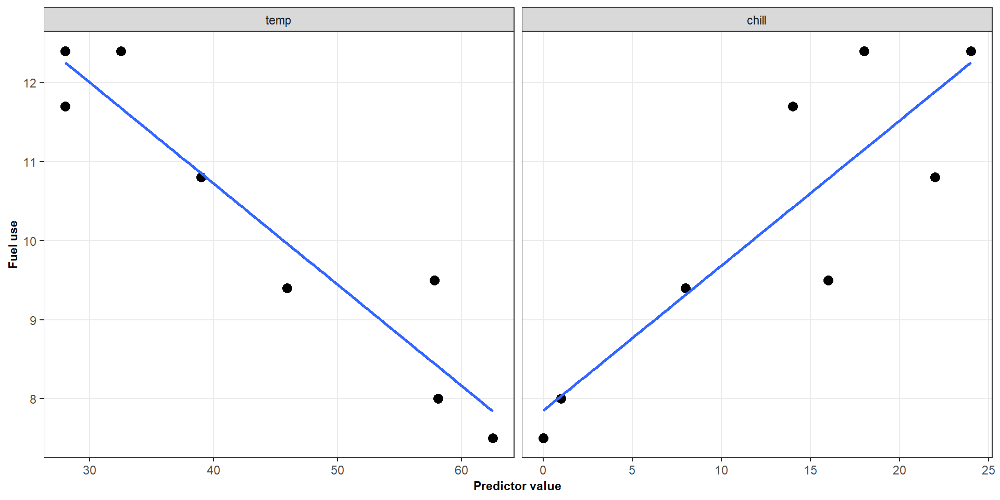
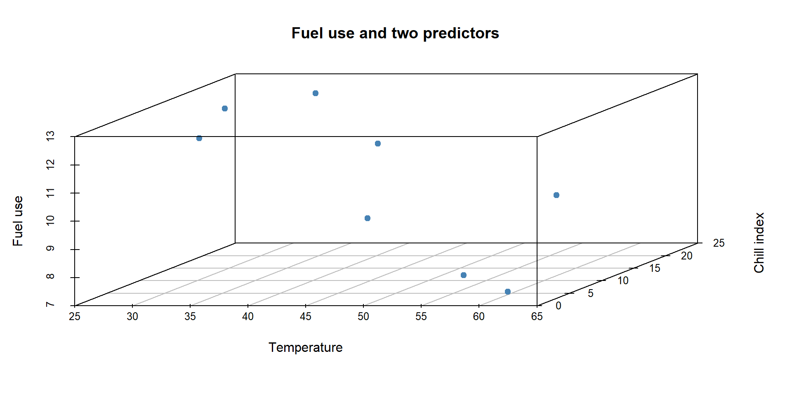
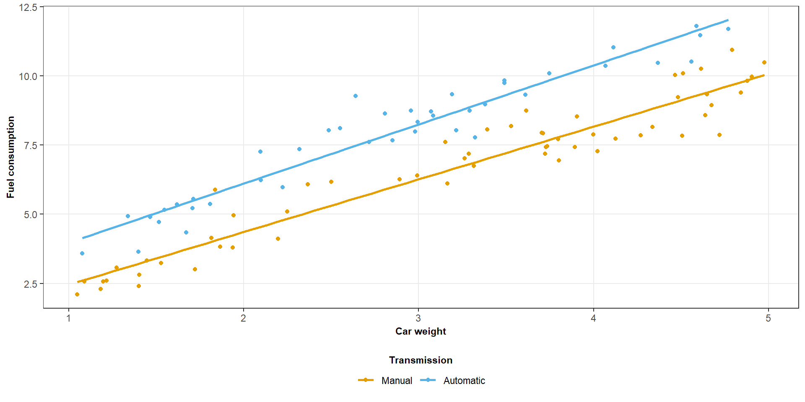
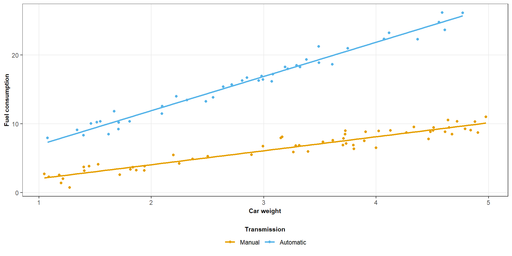
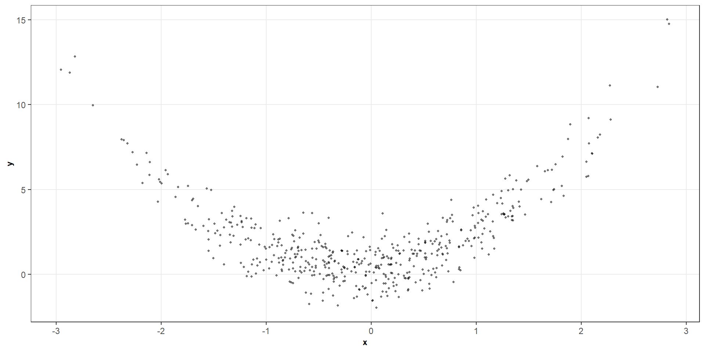
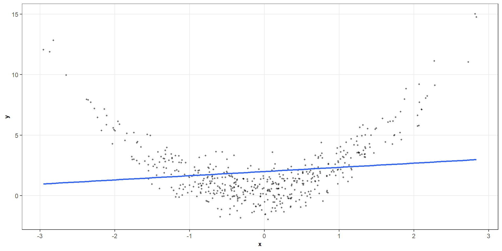
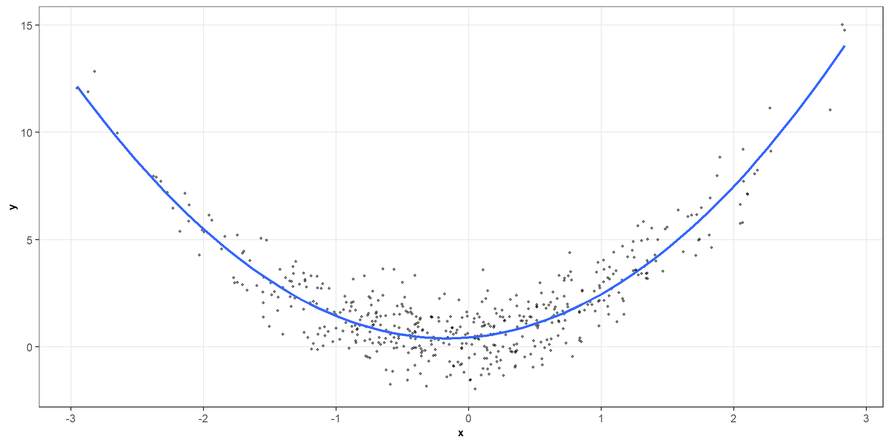

ST303 - Linear Models
In simple linear regression, we model the mean response using one predictor:
\[ E(Y \mid X = x) = \beta_0 + \beta_1 x \]
But real-world outcomes are rarely associated with just one variable.
For example, fuel use might depend on:
How can we incorporate several predictors into one model?
Suppose we have a response \(Y\) and predictors \(X_1, \ldots, X_k\)
The model is
\[ Y_i=\beta_0+\beta_1X_{i1}+ \cdots+ \beta_k X_{ik}+ \varepsilon_i \]
Equivalently,
\[ E(Y_i\mid X_{i1},\ldots,X_{ik}) =\beta_0+\sum_{j=1}^k\beta_jX_{ij} \]
Here:
Key idea
Each coefficient describes a relationship with the response, conditional on the other predictors in the model.
Information was recorded on fuel use and weather conditions for eight office complexes of similar size.
We want to understand how fuel use is associated with:

If we already know the temperature, could the chill index still help explain fuel use?
We fit
\[ Y_i = \beta_0 + \beta_1X_{i1} +\beta_2X_{i2} + \varepsilon_i \]
The fitted model is
\[ \widehat{Y} = \widehat{\beta}_0+ \widehat{\beta}_1 X_1+ \widehat{\beta}_2 X_2 \]
The coefficients are estimated simultaneously using least squares.
Unlike simple regression, the fitted relationship is a plane rather than a line.
fit <- lm(fuel ~ temp + chill, data = fuel_data)
summary(fit)
##
## Call:
## lm(formula = fuel ~ temp + chill, data = fuel_data)
##
## Residuals:
## 1 2 3 4 5 6 7 8
## 0.32674 -0.04328 0.23683 -0.61309 -0.23706 0.27414 0.03857 0.01713
##
## Coefficients:
## Estimate Std. Error t value Pr(>|t|)
## (Intercept) 13.10874 0.85570 15.319 2.15e-05 ***
## temp -0.09001 0.01408 -6.394 0.00139 **
## chill 0.08249 0.02200 3.749 0.01330 *
## ---
## Signif. codes: 0 '***' 0.001 '**' 0.01 '*' 0.05 '.' 0.1 ' ' 1
##
## Residual standard error: 0.3671 on 5 degrees of freedom
## Multiple R-squared: 0.9736, Adjusted R-squared: 0.9631
## F-statistic: 92.3 on 2 and 5 DF, p-value: 0.0001129For a building with temperature 45.9\(^\circ\)F and chill index 8, the estimated mean fuel use is
\[ \begin{align*} E(Y) &= \hat{\beta_0} + \hat{\beta_1}X_1 + \hat{\beta_2}X_2 \\[8pt] &= 13.11 - 0.09 (45.9) + 0.082(8) \\[8pt] &\approx 9.64 \end{align*} \]
Consider two buildings with the same chill index but temperatures differing by one degree.
Their fitted mean fuel-use difference is
\[ \begin{align*} &[\beta_0+\beta_1(t+1)+\beta_2c] -[\beta_0+\beta_1t+\beta_2c] =\beta_1 \end{align*} \]
\(\beta_1\) is the expected change in fuel use associated with a one-degree increase in temperature, holding chill index fixed
Similarly, \(\beta_2\) describes the expected change associated with a one-unit increase in chill index, holding temperature fixed
Let’s compare the following interpretations
Incorrect
A one-degree increase in temperature changes fuel use by \(\beta_1\)
Better
A one-degree increase in temperature is associated with a change of \(\beta_1\) in mean fuel use, for buildings with the same chill index.
Why does this distinction matter?
The first statement ignores the other predictor. The second describes the relationship represented by the fitted multiple regression model.
The intercept is
\[ E(Y \mid X_1 = 0, X_2 = 0) = \beta_0 \]
For the fuel-use example, this corresponds to temperature zero and chill index zero
Not always a practical interpretation

Suppose we want to model car fuel efficiency using:
\[ X_2 = \begin{cases} 0 & \text{manual}\\ 1 & \text{automatic} \end{cases} \]
Consider the additive model
\[ E(Y \mid X_1, X_2) = \beta_0 + \beta_1 X_1 + \beta_2 X_2 \]
What does this model imply about the relationship between weight and fuel consumption for each transmission type?
For manual cars, \(X_2 = 0\):
\[ E(Y \mid X_1, \text{manual}) = \beta_0 + \beta_1 X_1 \]
For automatic cars, \(X_2 = 1\)
\[ E(Y \mid X_1, \text{automatic}) = \beta_0 +\beta_1X_1 + \beta_2 \]
Same slopes - different intercepts

In the additive model,
\[ E(Y \mid X_1, X_2) = \beta_0 + \beta_1 X_1 + \beta_2 X_2 \]
the coefficient \(\beta_2\) is the expected difference between automatic and manual cars at the same weight.
Because the model has no interaction, that difference is constant across all weights.
Changing the reference category changes the interpretation of the intercept and the sign of the group coefficient, but not the fitted values.
Suppose the relationship between weight and fuel consumption is steeper for automatic cars than for manual cars.
Would the parallel-lines model adequately represent this pattern?
We need an interaction between weight and transmission type to allow the slopes to differ.
We extend the model by adding an interaction term:
\[ E(Y\mid X_1,X_2) = \beta_0 + \beta_1 X_1 + \beta_2 X_2 + \beta_3 X_1X_2 \]
Including the main effects alongside the interaction allows both the intercepts and slopes to differ
For manual cars, \(X_2 = 0\):
\[E(Y \mid X_1,\text{manual}) = \beta_0 + \beta_1X_1 \]
For automatic cars, \(X_2 = 1\):
\[ E(Y\mid X_1,\text{automatic}) = (\beta_0+\beta_2)+(\beta_1+\beta_3)X_1. \]
Consequently:

The effect of weight depends on transmission type.



The model becomes
\[ E(Y \mid X = x) = \beta_0 + \beta_1x + \beta_2x^2 \]
This is a quadratic regression model
The function I() tells R to interpret x^2 as an arithmetic square.
\[ E(Y \mid X = x) = \beta_0 + \beta_1x + \beta_2x^2 \]
is nonlinear in \(x\), but linear in its parameters
We can also fit higher-order polynomials, for example:
\[ E(Y \mid X = x) = \beta_0 + \beta_1x + \beta_2x^2 + \beta_3x^3 \]
Higher-order polynomials provide greater flexibility, but can behave erratically, particularly near the boundaries of the observed data
In a quadratic model,
\[ E(Y \mid X = x) = \beta_0 + \beta_1x + \beta_2x^2 \]
The slope of the fitted mean relationship at \(x\) is
\[ \frac{dE(Y \mid X = x)}{dx} =\beta_1 + 2\beta_2x \]
Let’s consider the model
\[ Y = e^{\beta_0+\beta_1X+\varepsilon} \]
We can transform this into a linear model via logs
\[ \log(Y) = \beta_0+\beta_1X+\varepsilon \]
The transformed model is linear in its parameters
However, the interpretation changes: the model describes the conditional mean of \(\log(Y)\), rather than directly modelling \(E(Y \mid X)\).
\[ E[\log(Y)\mid X]\ne \log E[Y\mid X]. \]